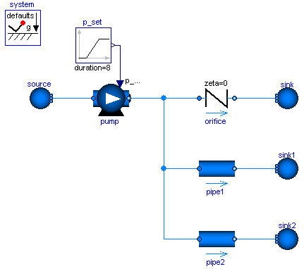

InverseParameterizationDemonstrates the parameterization of a pump and a pipe for given nominal values |
|
Diagram
{kind=link}
Information
This information is part of the Modelica Standard Library maintained by the Modelica Association.
A pump, an orifice and two pipes are parameterized with simple nominal values. Note that pipe1 and pipe2 use the flowModel NominalTurbulentFlow and NominalLaminarFlow, respectively, which do not require the specification of geometry data. Instead pathLengths_nominal are obtained internally for given nominal pressure loss and nominal mass flow rate.
The pump controls a pressure ramp from 1.9 bar to 2.1 bar. This causes an appropriate ramp on the mass flow rate of the orifice, which has a boundary pressure of 1 bar. Flow reversal occurs in the pipes, which have a boundary pressure of 2 bar. The Command plotResults can be used to see the pump speed N, which is controlled ideally to obtain the pressure ramp. Moreover the internally obtained nominal design values that fulfill the nominal operating conditions as well as the Reynolds number, m_flows_turbulent, and dps_fg_turbulent are plotted.
Note that the large value for pipe2.flowModel.pathLengths_nominal[1] is only meaningful under the made assumption of laminar flow, which is hardly possible for a real pipe.
Once the geometries have been designed, the NominalTurbulentPipeFlow correlations can easily be replaced with TurbulentPipeFlow or DetailedPipeFlow correlations. Similarly the ControlledPump can be replaced with a PrescribedPump to investigate a real controller or with a Pump with rotational shaft to investigate inertia effects.
The model has the parameter eps_m_flow_turbulent that can be used to change the flow through pipe1 from fully turbulent (eps_m_flow_turbulent=0) to fully laminar (eps_m_flow_turbulent>actual flow). Invoke plotResults and see pipe1.port_a.m_flow. Relating the actual flow to pipe1.flowModel.m_flows_turbulent[1], it can be seen that eps_m_flow_turbulent=0.1 is an appropriate choice for the given pipe diameter.
Parameters (1)
| eps_m_flow_turbulent |
Value: 0.1 Type: Real Description: Turbulent flow |m_flow| >= eps_m_flow_nominal*m_flow_nominal |
|---|
Components (10)
| source |
Type: Boundary_pT |
|
|---|---|---|
| pump |
Type: ControlledPump |
|
| orifice |
Type: SimpleGenericOrifice |
|
| sink |
Type: Boundary_pT |
|
| system |
Type: System |
|
| pipe1 |
Type: StaticPipe |
|
| sink1 |
Type: Boundary_pT |
|
| p_set |
Type: Ramp |
|
| pipe2 |
Type: StaticPipe |
|
| sink2 |
Type: Boundary_pT |